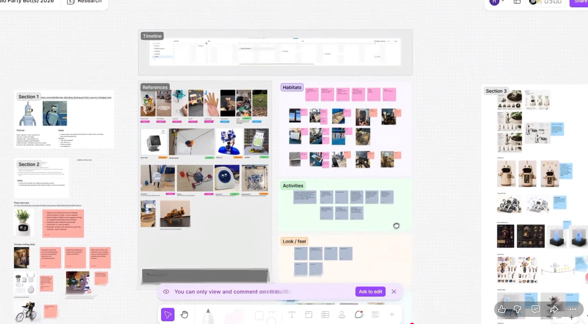
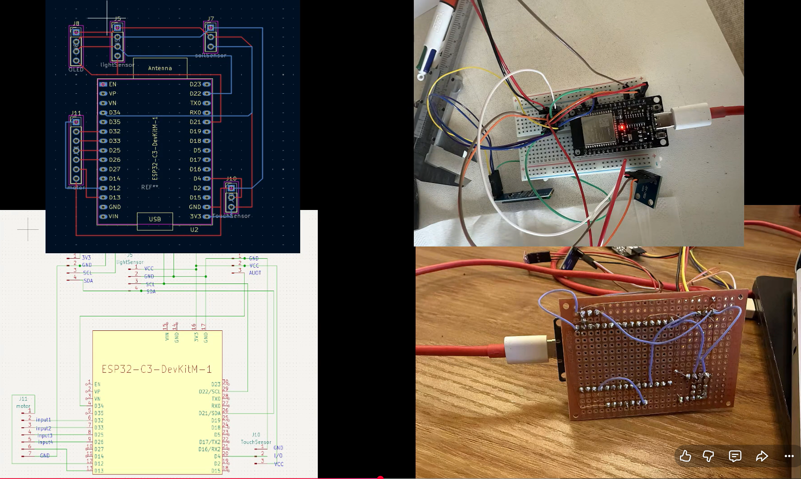
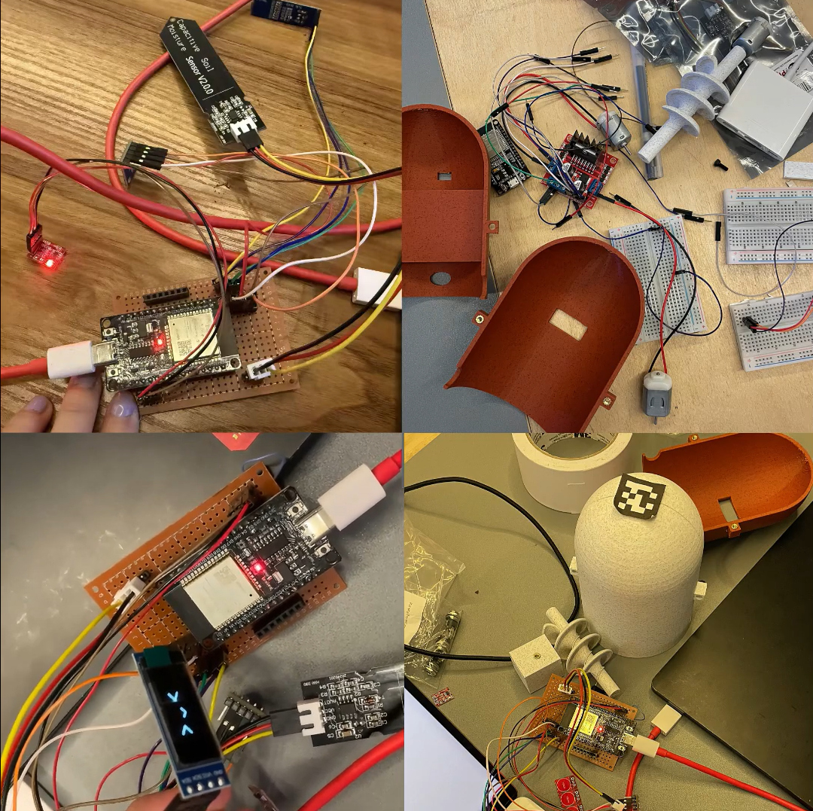
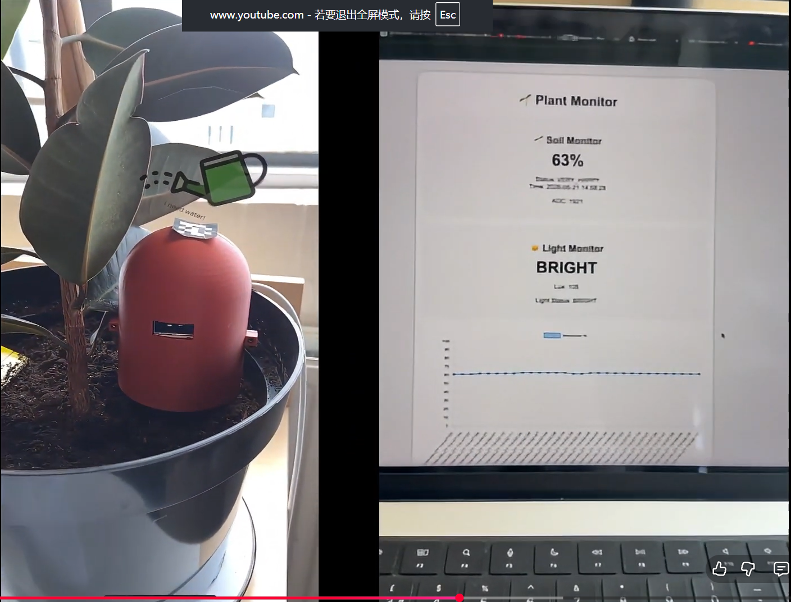

Plant Bot is a physical-computing prototype that turns plant-care data into an understandable and expressive experience. Four types of environmental data are mapped to six emotional states, care prompts, and contextual AR feedback.
The project connects user research and interaction design with a web interface, Arduino/ESP32 sensing, circuit and PCB work, communication, 3D modelling and printing, Unity/AR integration, and physical assembly.
From Research to Working Prototype
The project moved from reference research and interaction mapping into circuit design, sensor testing, physical assembly, and an integrated plant-care experience.

Research and concept directionReferences, habitats, activities, and form explorations shaped the physical and emotional interaction model.

Circuit developmentESP32 wiring moved from schematic and breadboard tests to a soldered prototype board.

Hardware assemblySensors, motor control, display, and the printed enclosure were brought together through iterative bench testing.

Integrated prototypeThe physical bot communicates care feedback while the companion interface exposes soil moisture and light conditions.
Key Features
Four categories of environmental data translated into six plant states and care guidance
A web interface that communicates plant condition and suggested actions
Arduino/ESP32 sensing supported by circuit, PCB, and communication prototyping
A 3D-modelled and printed physical prototype with Unity/AR feedback
Design Focus
Make invisible environmental conditions emotionally legible and actionable
Connect physical sensing, digital information, and AR feedback into one coherent care journey
Present meaningful states and guidance instead of exposing raw sensor values
Keep user comprehension, sensor accuracy, and AR runtime results as pending validation